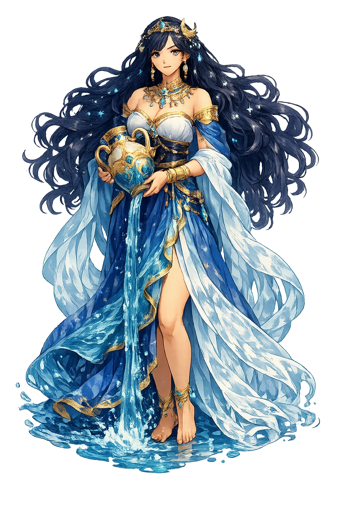

The Authentic Orthography
Fertility, Water, Wisdom · Immaculate, undefiled

Unicode restoration and ASCII comparison
𐬀𐬭𐬆𐬛𐬎𐬎𐬍 𐬯𐬏𐬭𐬁 𐬀𐬥𐬁𐬵𐬌𐬙𐬀
The name in its original Zoroastrian form. Anāhitā (𐬀𐬭𐬆𐬛𐬎𐬎𐬍 𐬯𐬏𐬭𐬁 𐬀𐬥𐬁𐬵𐬌𐬙𐬀) is attested in the source tradition — “Immaculate, undefiled”. Its macron-length vowels carry the full phonetic and orthographic weight of the source tradition.
anahita
Reduced to plain anahita, the name loses everything that made it specific: macron-length vowels. What remains is an ASCII string that machines can parse but that no longer speaks with its original voice.
Anāhitā
The Unicode restoration recovers what ASCII flattened. Anāhitā restores macron-length vowels, returning the name to its original written dignity. The domain encodes to Punycode, but the browser displays the truth.
Anāhitā.com → xn--anhit-gwad.com
The non-ASCII characters in Anāhitā are encoded while the ASCII remains visible. To the DNS, it is Punycode. To humanity, it is Anāhitā.
How Anāhitā travels from ancient script to the modern URL
Owned, ideal, and ASCII forms of Anāhitā
Anāhitā
Restores 𐬀𐬭𐬆𐬛𐬎𐬎𐬍 𐬯𐬏𐬭𐬁 𐬀𐬥𐬁𐬵𐬌𐬙𐬀. The live temple domain — anāhitā.com.
anahita
Flattens 𐬀𐬭𐬆𐬛𐬎𐬎𐬍 𐬯𐬏𐬭𐬁 𐬀𐬥𐬁𐬵𐬌𐬙𐬀. The plain ASCII fallback — what DNS and legacy systems see.
How Anāhitā was spoken
Fertility, Healing, and Wisdom
Anāhitā is the great Yazata of the Avestan pantheon, the goddess of the life-giving waters, and one of the most widely worshipped deities of ancient Iran. She is called Aredvi Sura Anāhitā — the moist, strong, undefiled — and her realm runs from the mythical river that surrounds the world to the springs that nourish fields, wombs, and kings.
The Avestan Yasht 5 hymns her as the source of all rivers, the force that makes the cosmos fertile and clean.
Kings pray to her for legitimacy, warriors for victory, women for safe childbirth, and farmers for abundant crops.
She is linked to the planet Venus in later tradition — the bright star that rises from and governs the waters.
The hymn describes her clothing of gold, her crown, her earrings, and her necklaces — a figure of Iranian royal magnificence.
Stories of Anāhitā
Anāhitā's mythology is concentrated in the fifth Yasht of the Avesta, a long liturgical hymn that praises her powers and lists the kings and heroes who sacrificed to her.
Aredvi Sura Anāhitā is praised as the mighty river that flows from Mount Hara into the sea Vourukaša, feeding the seven rivers of the earth. The Yasht asks her to come down from the stars to receive sacrifice, and it promises her worshippers fertile fields, healthy children, victorious armies, and long life. She is simultaneously a cosmic geography and a personal savior.
Artaxerxes II and later Achaemenid kings invoked Anāhitā in their inscriptions alongside Ahura Mazdā and Mithra. Her cult spread through the empire, and temples were erected to her at Ecbatana, Susa, and Babylon. For the Iranian aristocracy, devotion to Anāhitā was a marker of loyalty and legitimacy.
Under the Sasanians, Anāhitā was identified with the planet Venus and worshipped at major fire-temples and lake-sanctuaries. Lake Hāmūn in Sīstān and the Ādur-Anāhīd fire at Stakhr were centers of her cult. Armenian sources preserve the memory of her temples and processions, where horses and chariots were dedicated to her.
Anāhitā is the water that knows no stain. In a religious world dominated by fire and light, she represents the sacred power of moisture, fertility, and the female divine. Her name means undefiled, and her cult asks human beings to keep the waters clean — an ecological commandment older than any modern environmentalism.
Enter Extended Lore